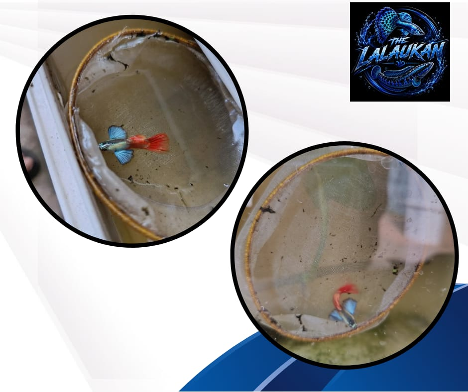

Guppy PRTDE
Ikan guppy jenis PRTDE adalah guppy hias yang dikenal karena warna, corak, dan bentuk siripnya yang menarik. Ciri setiap ikan dapat berbeda, tergantung garis keturunan dan standar strain yang digunakan. Seperti guppy lainnya, ikan ini relatif mudah dipelihara, tetapi tetap membutuhkan air bersih, pakan bergizi, dan kondisi akuarium yang stabil. Penampilannya yang menawan serta kemampuannya berkembang biak menjadikan PRTDE menarik bagi penghobi maupun pembudiday
Rp25.000/Pasang
Beuli di tiktok